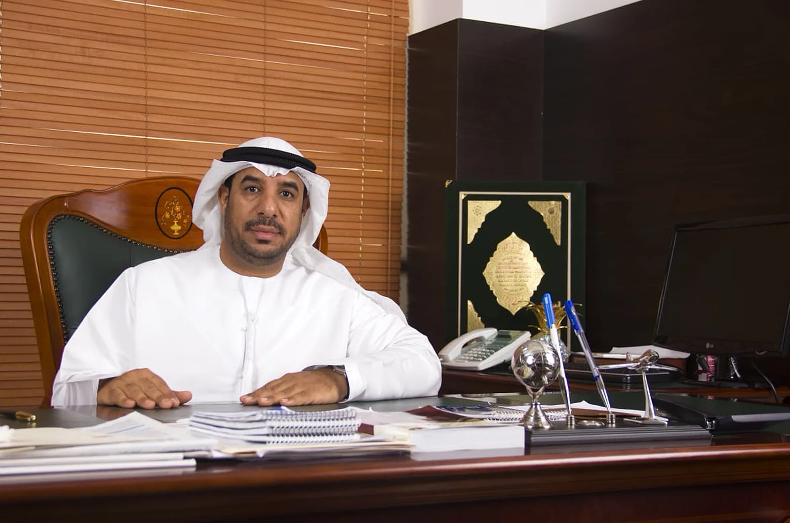
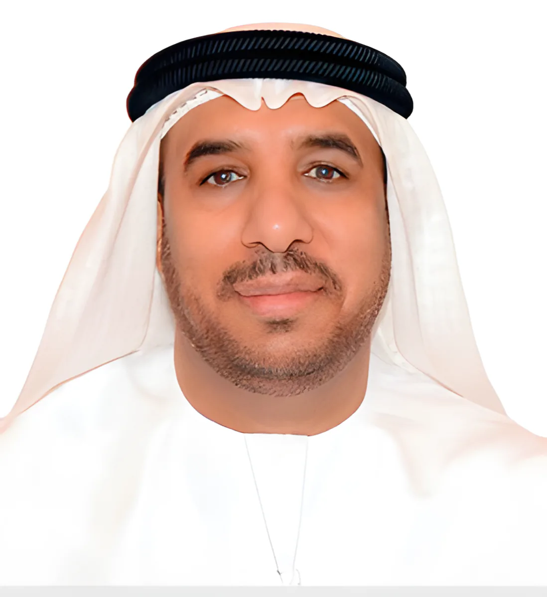
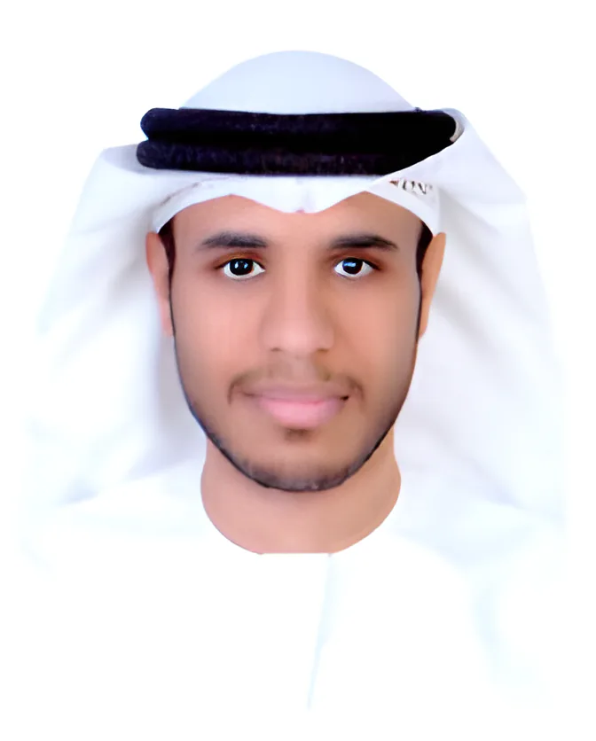
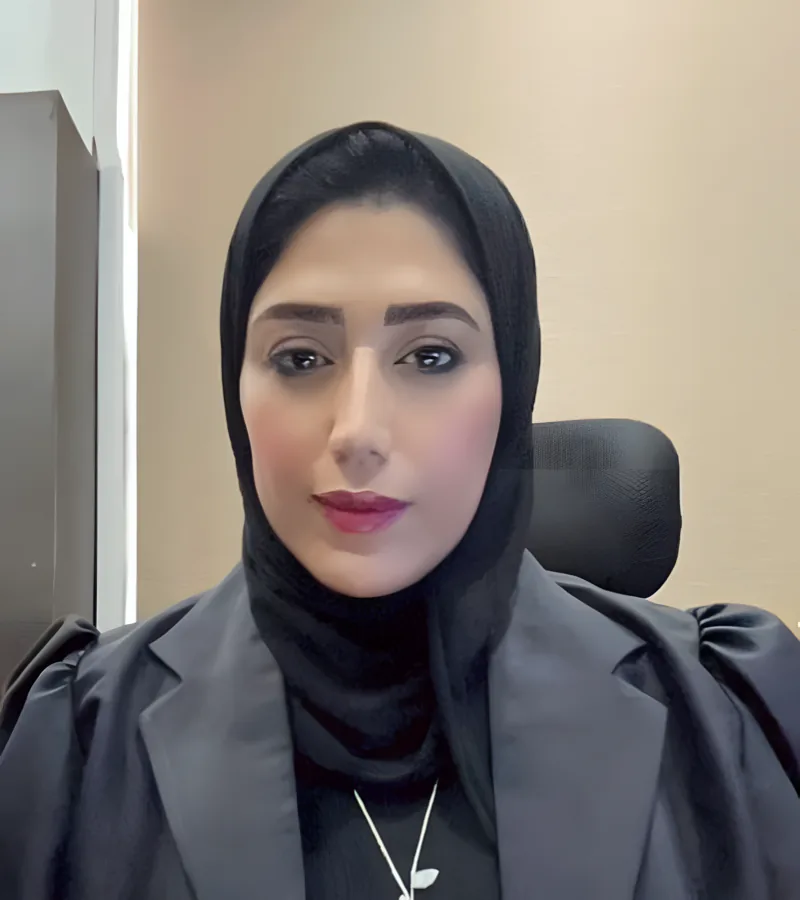
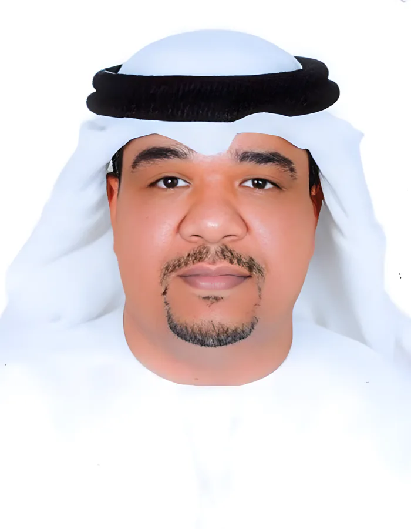
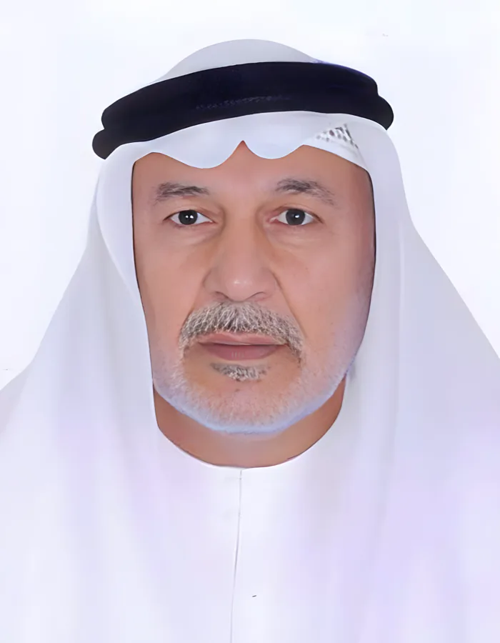
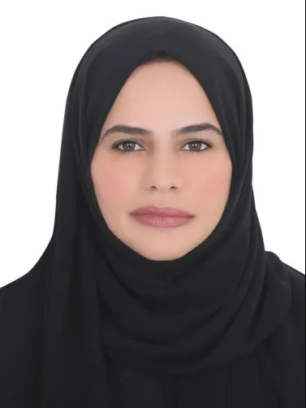

اسمان على الباب
بدأ المكتب باسم «مكتب الزحمي واليوسف للمحاماة والاستشارات القانونية»، أسسه المستشار يعقوب يوسف الحمادي والمحامي سعيد مبارك الزحمي، أول محامٍ مارس المهنة في الفجيرة.
افتتاح المكتب. صورة من الأرشيف.
الأستاذ سعيد الزحمي أول محامٍ مارس المهنة في الفجيرة. واليوم يترافع مكتبه أمام جميع محاكم الدولة، ويقدّم الاستشارة للأفراد والشركات والبنوك بالعربية والإنجليزية.
محامونا لهم حق الحضور والمرافعة أمام جميع محاكم الدولة، من المحكمة الابتدائية حتى المحكمة الاتحادية العليا. نكتب المذكرات ونترافع ونتابع الحكم حتى التنفيذ. وملفك يبقى عندنا ولا يخرج.
اثنا عشر نوعاً من القضايا والخدمات نتولاها كل أسبوع. اضغط على أي منها للملخص، أو اقرأ صفحة مجالات العمل كاملة.
ندافع أمام محاكم المرور والبلدية والنيابة العامة وأمن الدولة، ونمثّل المجني عليه في الدعوى المدنية التابعة. شيكات، احتيال، خيانة أمانة، جرائم إلكترونية، اعتداء، ومخالفات الإقامة.
نترافع أمام محاكم الأسرة، ونطلب الأوامر الوقتية العاجلة للنفقة ورؤية الأطفال التي لا تنتظر الحكم النهائي.
للعامل الذي يطالب بمستحقاته، ولصاحب العمل الذي يريد تسويتها كما ينص القانون، أمام المحاكم العمالية والخبرة والمحاكم الإدارية.
قيد الدعوى وحضور الجلسات والمذكرات والتظلمات والطعون، ثم تنفيذ القرار.
تصديق المحامي المعتمد على المستندات الصادرة في الخارج والمطلوبة للخارج: بيع عقار في أمريكا وبريطانيا، فتح حسابات، شركات أوفشور، ملفات هجرة.
اجلس مع المستشار القانوني أو المحامي المعتمد، أو أرسل أوراقك بالبريد. يصلك الرد مكتوباً ومعه سنده من القانون.
الحجز على الأموال والحسابات، منع السفر، التمثيل أمام الابتدائي والاستئناف والنقض، ثم التنفيذ. فريق من المحامين المواطنين يسانده مستشارون قانونيون.
ذات مسؤولية محدودة أو توصية أو مساهمة: ننصح المستثمر بالشكل المناسب لنشاطه ونجهّز أوراق التأسيس.
البنوك من عملاء المكتب منذ سنواته الأولى: المطالبات والتسهيلات والضمانات وما يتبعها من نزاعات.
نلتقي المدين بحضور مستشار قانوني ونتفاوض على السداد أو الجدولة. وإن لم يسدد نرفع الدعوى.
عقود تأسيس الشركات ذات المسؤولية المحدودة، عقود الشراكة، وعقود المشاركة العامة والخاصة.
استشارات العمل عبر الإنترنت ضمن القوانين الاتحادية، والتمثيل في قضايا الجرائم الإلكترونية والملكية الفكرية.
أكثر من ثلاثين سنة، في الصور التي احتفظ بها المكتب.
بدأ المكتب باسم «مكتب الزحمي واليوسف للمحاماة والاستشارات القانونية»، أسسه المستشار يعقوب يوسف الحمادي والمحامي سعيد مبارك الزحمي، أول محامٍ مارس المهنة في الفجيرة.
افتتاح المكتب. صورة من الأرشيف.بعد سنة ونصف افتتحه رسمياً سمو الشيخ صالح بن حمد الشرقي، رئيس دائرة الصناعة والاقتصاد بالفجيرة. وكانت الدوائر الحكومية والبنوك من أوائل عملائه.
تكريم الأستاذ سعيد الزحمي من سمو الشيخ صالح بن محمد الشرقي.لقاءات مع البيان والخليج والإمارات اليوم، ورئاسة لجنة استئناف، ومستشارونا يشرحون الشيكات والوكالات والتشهير الإلكتروني في برنامج «صباح الخير يا وطن».
مع سمو الشيخ صالح بن محمد الشرقي.المكتب الرئيسي ما زال في الطابق السادس ببناية الفجيرة الوطنية للتأمين، وفرع أبوظبي على شارع المطار. سبعة محامين وثمانية مستشارين قانونيين وفريق من الباحثين والمترجمين.
شهادة تقدير من محكمة الذيد الاتحادية الابتدائية، اليوم الوطني 48.من قائمة العملاء والشركاء المنشورة لدى المكتب.
محامون مواطنون يترافعون بأنفسهم، ومعهم مستشارون قانونيون يعدّون المذكرات. كلهم من فريق المكتب المنشور.

الشفافية والمصداقية، وبذل الجهد لإعادة الحقوق إلى أصحابها، والحفاظ على سرية معلومات كل موكل وقضيته.الأسس التي قام عليها المكتب، 1989





الاستشارات بموعد مسبق. اتصل بأي من الفرعين أو أرسل أوراقك على واتساب وسيعود إليك المستشار القانوني.